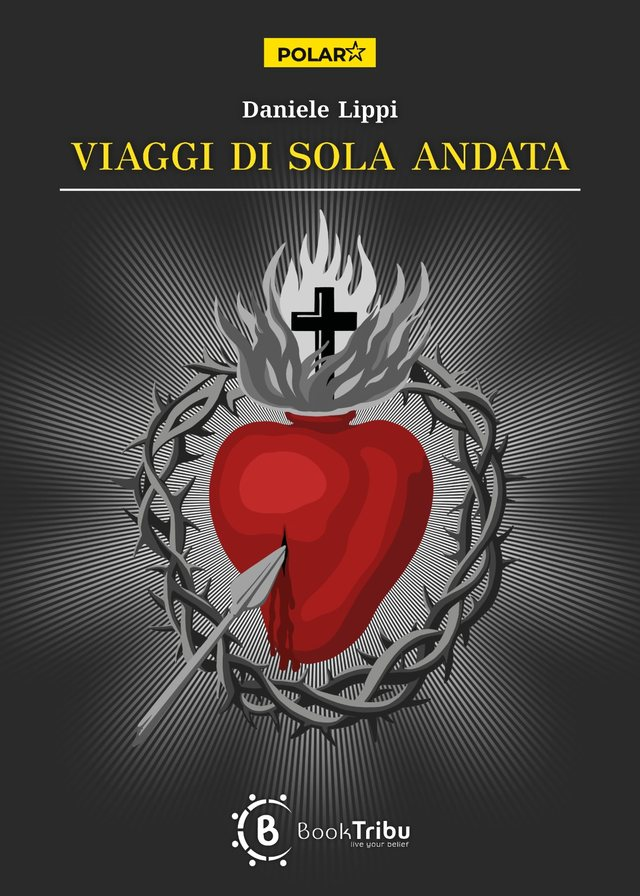

Viaggi di sola andata
Finalista al NeRoma Noir Festival 2026
L’ispettore Lando ha perso la sua amata Anna, ma non si arrende. Cento chili di cocaina svaniscono sotto gli occhi delle forze dell’ordine. Un ragazzo scopre che una scelta sbagliata può costarti tutto. Una comunità di recupero cela segreti inconfessabili. Un’anonima officina nautica nasconde i traffici di tre strani personaggi. Due militari allo sbando affrontano il loro ultimo viaggio. Tra il porto di Ravenna, le saline di Cervia e i vicoli di Bologna, tante vite scorrono su binari paralleli verso un punto di collisione. Un romanzo corale sui viaggi di sola andata verso la dipendenza: dalla droga, dal potere, dall’amore, dal passato. Sulle crociere esistenziali senza biglietto di ritorno, sulle strade che imbocchiamo senza rendercene conto, sui ponti che crollano mentre ancora li stiamo attraversando. Perché dietro ogni viaggio di sola andata resta sempre una domanda: quando abbiamo smesso di essere padroni della nostra vita?
Romanzo in italiano